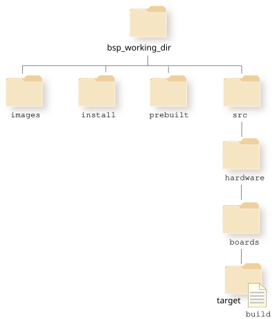

After you've completed updating and building your Wfdcfg library, you are ready to rebuild your QNX IFS and transfer it to your target.

/usr/lib/graphics/platform/libwfdcfg-sample.so=graphics/platform/libwfdcfg-sample.so
Your default library search path is an acceptable path for your built Wfdcfg library.
For more information on changing buildfiles, refer to Building Embedded Systems, or to the BSP User's Guide. The BSP User's Guide that's specific to your target is available from from our website, www.qnx.com.
make clean
make
For more information on building your QNX IFS, refer to Building Embedded Systems, or to the BSP User's Guide. The BSP User's Guide that's specific to your target is available from from our website, www.qnx.com.
From Building Embedded Systems, follow the instructions on how to transfer your QNX IFS to your target.